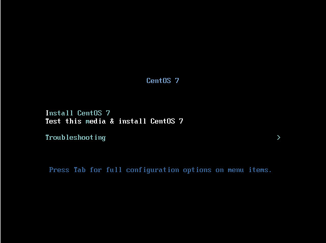

Quick Installation Guide
Interactive Installation
This section describes the simple procedure to install CentOS after you have created and booted from an installation USB drive.
Prerequisites: Create an installation USB drive and boot it. For details, see:
After booting the installation USB drive:
-
Select
Install CentOSin the boot menu and press Enter. -
After Anaconda, the CentOS installer, started, select your language and region, and click
Continue. -
The
Installation Summaryis the central screen to set configuration options:
You can display and modify the individual options in any order. If a configuration option was automatically configured correctly, no further action is required. However, if items are marked with an exclamation point icon, you must complete the configuration for these items before you can begin the installation.
Nothing will be written to the disk until you click the Begin Installation button.
-
Select
Date & Time:-
Set your region and the nearest city in your time zone.
-
Click Done to return to the
Installation Summary.
-
-
Select Keyboard Layout:
-
Use the + and - buttons to add and remove keyboard layouts.
-
If you enable multiple keyboard layouts, move your preferred layout to the top of the list using the ↑ button to set it as default.
-
Click Done to return to the
Installation Summary.
-
-
Select
Installation Destination:-
Select the target disk. A check mark is displayed next to the selected target.
The selected disk is partitioned automatically.
-
Click Done to return to the
Installation Summary.
-
-
Select
Network and Hostname:-
Click the
Ethernetsliding switch in the top right corner to enable the network configuration. -
Optional, select the device and click Configure to update the network interface configuration.
-
Click Done to return to the
Installation Summary.
Anaconda applies the network settings immediately. They are used during the setup and after the installation.
-
-
On the
Installation Summaryscreen, click Begin Installation.
-
The installation starts and the
Configurationscreen is displayed:During the installation:
-
Select
Root Password:-
Enter the password for the
rootuser and confirm it. -
Click Done to return to the
Configurationscreen.
-
-
Select
User Creation:-
Enter the user’s full name.
-
Optionally, update the automatically generated user name.
-
Set the password and confirm it.
-
Optionally, check the
Make this user administratorcheck box. This will add the user to thewheelgroup and allow this account to usesudowithout any further configuration. -
Click Done to return to the
Configurationscreen.
-
-
Wait until the installation completes and click Reboot.
-
-
After the installed system has been started:
-
If you installed the server using the
Server with GUIbase environment, the Initial Setup application is started automatically. Review and accept the license agreement to exit Initial Setup and start using your system. For details, see Initial Setup.
-
Automatic Installation
This section describes a simple procedure on how to add a Kickstart file to the installation USB drive, which automatically installs CentOS. You can use this procedure to deploy CentOS on multiple machines.
Generating the USB Boot Media
-
Record an installation in a Kickstart file:
-
Manually install CentOS once. For details see Interactive Installation.
-
Boot the installed system. During the installation, Anaconda created a Kickstart file with the settings in the
/root/anaconda-ks.cfgfile.
-
-
Download the CentOS installation DVD ISO file to the
/tmp/directory. -
Mount the installation ISO file to the
/mnt/directory. For example:mount -o loop /tmp/CentOS-server-7-x86_64-dvd.iso /mnt/ -
Create a working directory and copy the DVD content to it. For example:
mkdir /root/CentOS-install/shopt -s dotglobcp -avRf /mnt/* /root/CentOS-install/ -
Unmount the ISO file:
umount /mnt/ -
Copy the Kickstart file generated during the installation to the working directory:
cp /root/anaconda-ks.cfg /root/CentOS-install/ -
Display the installation DVD volume name:
isoinfo -d -i CentOS-server-7-x86_64-dvd.iso | grep "Volume id" | \ sed -e 's/Volume id: //' -e 's/ /\\x20/g' CentOS-7\x20Server.x86_64 -
Add a new menu entry to the boot
/root/CentOS-install/isolinux/isolinux.cfgfile that uses the Kickstart file. For example:label kickstart menu label ^Kickstart Installation of CentOS 7 kernel vmlinuz append initrd=initrd.img inst.stage2=hd:LABEL=CentOS-7\x20Server.x86_64 inst.ks=hd:LABEL=CentOS-7\x20Server.x86_64:/anaconda-ks.cfg
Set the
inst.stage2=hd:LABEL=option andinst.ks=hd:LABEL=options to the DVD volume name retrieved in the previous step -
Before you create the
/root/CentOS-ks.isofile from the working directory, execute the following steps for a USB UEFI boot or for a CDROM UEFI boot:-
For a USB UEFI boot, follow the steps:
-
Mount the volume:
mount /root/CentOS-install/images/efiboot.img /mnt/Edit the file
/mnt/EFI/BOOT/grub.cfg: -
Add a new menu entry:
'Kickstart Installation of CentOS-7' --class fedora --class gnu-linux --class gnu --class os { linuxefi /images/pxeboot/vmlinuz inst.stage2=hd:LABEL=CentOS-7\x20Server.x86_64 inst.ks=hd:LABEL=CentOS-7\x20Server.x86_64:/anaconda-ks.cfg initrdefi /images/pxeboot/initrd.img } -
Unmount the volume:
umount /mnt
-
-
For a CDROM UEFI boot, follow the steps:
-
Edit the file
/root/CentOS-install/EFI/BOOT/grub.cfg: -
Add a new menu entry to the file:
'Kickstart Installation of CentOS-7' --class fedora --class gnu-linux --class gnu --class os { linuxefi /images/pxeboot/vmlinuz inst.stage2=hd:LABEL=CentOS-7\x20Server.x86_64 inst.ks=hd:LABEL=CentOS-7\x20Server.x86_64:/anaconda-ks.cfg initrdefi /images/pxeboot/initrd.img }
-
-
-
Create the
/root/CentOS-ks.isofile from the working directory:mkisofs -J -T -o /root/CentOS-ks.iso -b isolinux/isolinux.bin \ -c isolinux/boot.cat -no-emul-boot -boot-load-size 4 -boot-info-table \ -R -m TRANS.TBL -graft-points -V "CentOS-7 Server.x86_64" \ /root/CentOS-install/Set the
-Voption to the DVD volume name retrieved in an earlier step and replace\x20in the string with a space. -
Make the ISO image created by the command
mkisofsbootable:isohybrid --uefi /root/rhel-ks.iso -
Create an installation USB drive. For details, see Making Installation USB Media on Linux.
Install CentOS Using the Kickstart File
-
Boot the installation USB drive. See Booting the Installation on 64-bit AMD, Intel, and ARM systems.
-
Select the entry with the Kickstart configuration that you created in Generating the USB Boot Media.